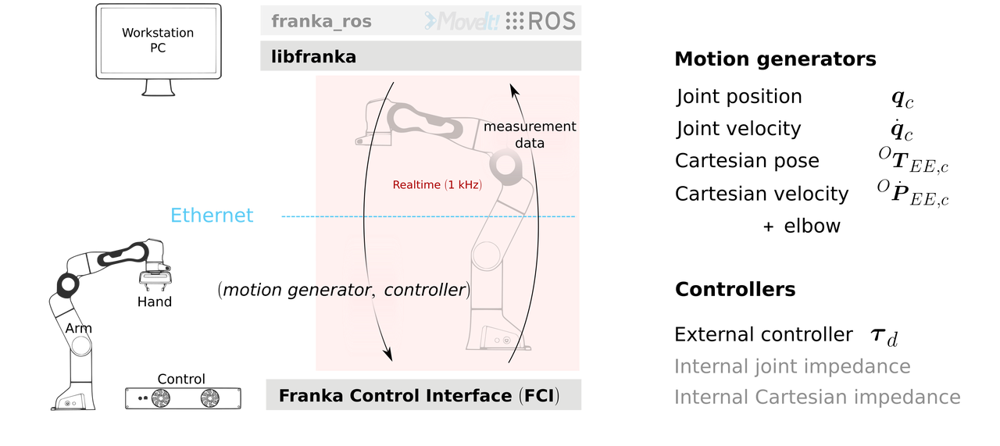
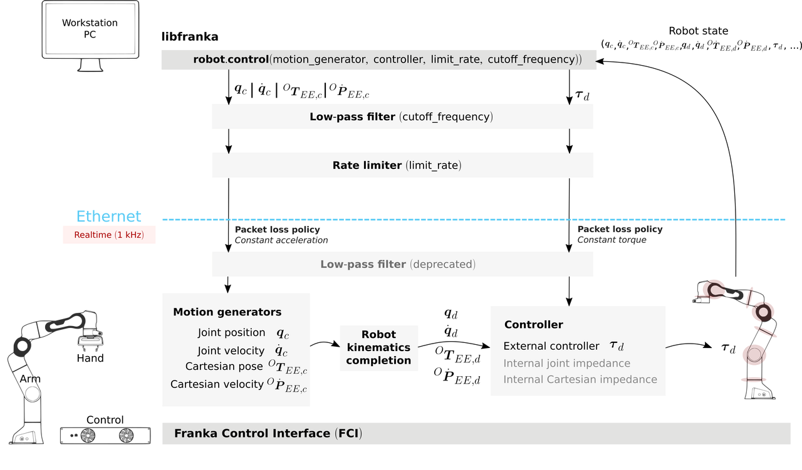

Franka机械臂上位机libfranka系统架构分析
1. 概述
1.1 总体介绍
franka机器人上位机libfranka通过UDP与控制器通讯，通讯周期1KHz。

用户需要实现运动规划器（motion generator）和控制器（Controller）。

每个周期计算出运动指令（位置、速度）和转矩指令，下发给franka下位机（控制器）。
1.2 控制模式
Motion Generators一共有5种：无、JointPositions、JointVelocities、CartesianPose、CartesianVelocities
Controllers一共有2种：control_callback（用户设置）、ControllerMode（控制器内部实现）。
因此Control函数一共有9个重载（无Motion Generator下，只有用户Controller）。
ControllerMode（控制器内部实现）的控制模式又分为关节阻抗和笛卡尔阻抗。
因此可以实现的Motion Generators和Controllers的组合一共有13种，如下表：
| 运动规划模式(Motion Generators) | 力矩控制器模式(Controllers) | Control函数 |
|---|---|---|
| 无（纯转矩模式） | 外部转矩 | void control(std::function\ |
| 关节位置 | 外部转矩 | void control( std::function\ |
| 关节速度 | 外部转矩 | void control( std::function\ |
| 笛卡尔位置 | 外部转矩 | void control( std::function\ |
| 笛卡尔速度 | 外部转矩 | void control(std::function\ |
| 关节位置 | 关节阻抗 | void control( std::function\ |
| 关节速度 | 关节阻抗 | void control( std::function\ |
| 笛卡尔位置 | 关节阻抗 | void control( std::function\ |
| 笛卡尔速度 | 关节阻抗 | void control(std::function\ |
| 关节位置 | 笛卡尔阻抗 | 同上ControllerMode controller_mode换成ControllerMode::kCartesianImpedance |
| 关节速度 | 笛卡尔阻抗 | 同上ControllerMode controller_mode换成ControllerMode::kCartesianImpedance |
| 笛卡尔位置 | 笛卡尔阻抗 | 同上ControllerMode controller_mode换成ControllerMode::kCartesianImpedance |
| 笛卡尔速度 | 笛卡尔阻抗 | 同上ControllerMode controller_mode换成ControllerMode::kCartesianImpedance |
2. 控制器loop代码解析
2.1 control函数
通过control函数的Motion Generators和Controllers实例化一个ControlLoop，然后进行loop：
2.2 control_loop.loop核心函数
2.3 updateMotion 写指令，读状态反馈
2.4 sendRobotCommand UDP写指令
RobotCommand：
2.5 receiveRobotState UDP读指令
RobotState:
3. 手动loop代码解析
libfranka支持用户不使用自动执行的loop，而是手动调度读写和控制器计算：
4. 控制周期抖动
由于UDP连接不稳定，而且有丢包风险。因此回调函数motion_generator和controll有一个参数duration表示控制周期，一个例子：
其中积分时间不是一个固定的采样周期，而是计算的时间差：
tau_error_integral += period.toSec() * (tau_d - tau_ext);
franka的控制周期是不稳定的！具体抖动和丢包情况待验证。
但franka内部实现的关节阻抗和笛卡尔阻抗是运行在控制器中的，不受控制周期不稳定的影响。